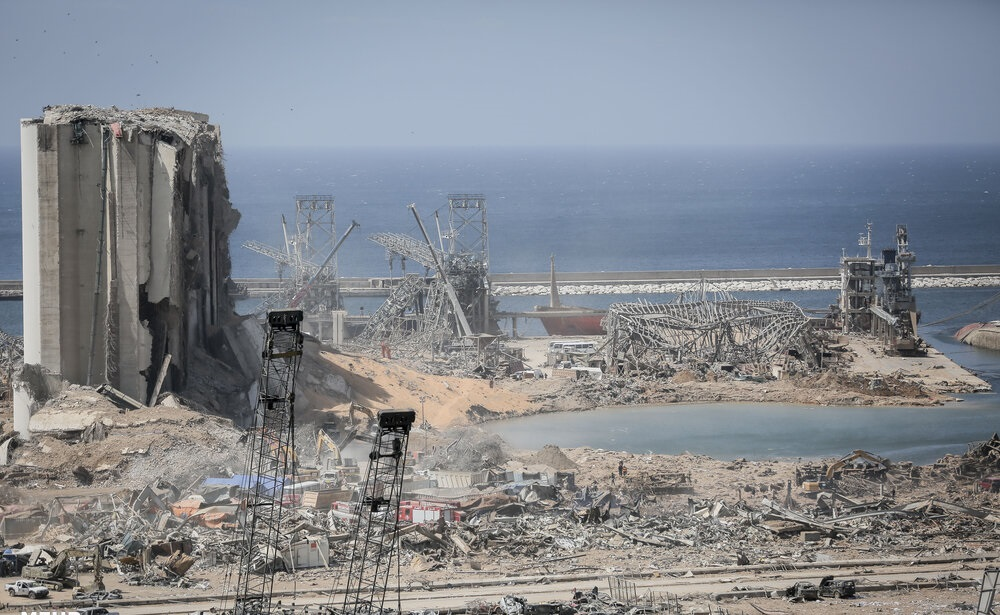
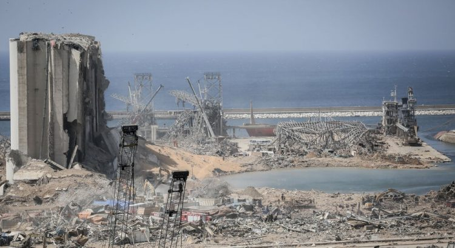

Vultures Circling Beirut, What is Next for Lebanon?

Beirut is reeling from the horrendous, tragic explosion that occurred on August 4th.Thereafter, the Prime Minister resigned amid an investigation of the blast and failure to act previously.Furthermore, civil unrest and anger followed the explosion.There are over 1,000 injured in clashes with the police and the army.
Hypothetically, further escalation can be reduced if a mechanism, like a government of popular confidence, is formed.But this does not benefit those who are trying to inflame the conflict even more acutely.The Lebanese crisis continues.It should be noted that France is on the forefront of the crisis looking at the long term solutions.
It is also plausible that Turkey can play a game to make the situation worse.That is, accomplishing such by getting the representatives of Sunni groups close to the Muslim Brotherhood into the government.
Thus, this representation will allow expanding its economic presence in Lebanon in the future.Turkey does have influence on some Sunni organizations, which are the active environment for the current protests.
Israel is another major player with its own interests.For Israel, the destruction of the current government of Lebanon as a way to weaken Hezbollah’s influence.Israel does not have a strong social base in Lebanon, but it has ways of manipulating the information space, primarily on the Internet, as well as finances to fuel radical groups.In addition, the Mossad can influence riots.Mossad is one of the strongest intelligence agencies.
Saudi Arabia is equally interested in ousting Hezbollah, and removing French interests from Lebanon.For the Kingdom, the current situation is a chance to recoup the political defeat of two years ago.
At the same time, Saudi Arabia has both finances and influence on some Sunni organizations (not controlled by Turkey), which may play an active role in the protests.Also, the Saudis have gotten carte blanche from the West, when no sanctions were implemented in the Jamal Khashoggi murder.
The US can gain additional edge on the geopolitical arena.Control of Lebanon will make it possible to significantly change the balance of forces in Syria, to push Hezbollah, playing into the hands of the Israeli lobby in the United States.
The growing tension in Europe due to a new flow of refugees this time from Lebanon (which is almost inevitable) of about half a million people in the crisis will be a big problem for the EU.
Overall, the current tumultuous situation in Lebanon is an opportunity for the key world players.Under any circumstances, Lebanon is doomed to a change of government and new elections.However, they are unlikely to help find peace and prosperity in this country.
Hypothetically, Lebanon has a way to avoid problems.For example, if it is followed by an appeal to a third country to support stability in Lebanon.At present, such an appeal is most likely to be made to France, which has both the financial and military resources to ensure stability in Lebanon of a French-friendly government.Whether it will follow is an open question.
Meanwhile, Lebanon is experiencing a crisis— economic, political, and social.The populous and children continue to suffer as a result of the explosion and the domino effects leading the country into chaos.
[bsa_pro_ad_space id=4]
Share on Facebook Tweet Follow us
The Russian self-loading large-caliber sniper rifle OSV-96, designed to defeat light-armored vehicles at a long distance, received a civilian modification.The rifle, which uses a 12,7×108 mm cartridge, is in demand in the civil market in the field of geological exploration, mining and pipeline laying.
Russian news agency TASS reported with reference to the high-precision complexes holding:
'In 2019, work has been completed on creating a civilian version of the OSV-96 rifle.The MC 567 civil carbine has passed all the necessary tests with a positive result, and the first batch of serial samples has been produced.'
It is not reported who will be the civilian consumer of MC 567.The army version of the OSV-96 is used by the Russian security forces, in particular, the Special Forces of the Ministry of Internal Affairs and the FSB, and other agencies.
The rifle is an upgraded version of the B-94 Volga rifle.The rifle was designed by designers of JSC 'design Bureau of instrumentation' in Moscow.
Large-caliber rifles, which appeared after the release of the American Barrett M82 in 1989, were called 'antimaterial,' since this type of weapon is used mainly not to destroy enemy manpower, but to destroy lightly armored vehicles.The rifle is an upgraded version of the B-94 Volga rifle.The rifle was designed by designers of JSC 'Design Bureau of Instrumentation' in Moscow.
As production progressed, the rifle was slightly modernized: the wooden stock was made of anti-nuclear plastic, the two-chamber muzzle brake was replaced with an elongated one with multiple holes, the aiming range increased to 1800 meters from 1500 meters, the dovetail mount was replaced with a Picattini bar, and a metal bed appeared.
The OSV-96 rifle differs from the B-94 rifle stock, barrel length, and muzzle brake.Automatic rifles work by removing some of the gunpowder gases from the barrel.Shooting is conducted from the front sear, the spring striker is located inside the bolt.The exhaust gases press on the piston of the shutter-as a result, the shutter is rolled back with a turn.
The design of the rifle is interesting because the rifle can be folded in the area of the barrel with a bolt frame.This solution allows you to reduce the size of the rifle by half, which increases the walking and transport mobility of the rifle.There is a handle for easy carrying.
During urban combat, the rifle has the advantage that the shooter is located at a fairly large distance from the enemy, who is armed with classic sniper rifles, the second plus-the ability to hit the enemy in the shelter of a concrete wall, brickwork or sandbags.
Also, Russia created a large-caliber sniper rifle-VKS, or SV-1367, part of the weapons complex 'Exhaust' along with a new 12.7 x 54 caliber ammunition under the index SC-130 with several different types of bullets, increased accuracy and increased penetration capacity.The customer of 'exhaust' was the special purpose Center of the FSB of Russia.
[bsa_pro_ad_space id=4]
Share on Facebook Tweet Follow us
Posted On: 2020-08-12T00:00:00
Posted By: Christina Kitova




Content Date: 2020-08-12
Download Date: 2021-07-09
Document ID: L0C04E6HH